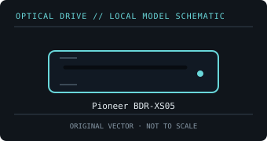

[ OPTICAL DRIVES // IDENTIFIED EXTERNAL MODEL ]
Pioneer BDR-XS05
Portable slot-loading external Blu-ray writer; this XS05 SKU is a USB 3.0 model and must not be confused with later UHD-capable XS07 variants.

IDENTIFICATION: Match the exact label and suffix to manufacturer documentation. Ratings are maximums under supported-media conditions, not guaranteed sustained speeds.
Model-specific specifications
| Catalog subcategory | External Blu-ray drives |
|---|---|
| Exact model / SKU | Pioneer BDR-XS05 |
| BD formats and read rates | BD-ROM, BD-R (SL/DL/TL), BD-RE (SL/DL); standard DVD and CD recordable/rewriteable formats. Read: BD-ROM / BD-R / BD-RE up to 6× (media-dependent). |
| BD write formats and rates | BD-R SL/DL/TL up to 6×; BD-RE up to 2×. |
| DVD formats and read rates | DVD-ROM, DVD±R, DVD±R DL, DVD±RW and DVD-RAM. Read: DVD-ROM up to 8×. |
| DVD write formats and rates | DVD±R up to 8×; DVD±R DL 6×; DVD+RW 8×; DVD-RW 6×; DVD-RAM 5×. |
| CD formats and read rates | CD-ROM, CD-R and CD-RW. Read: CD-ROM up to 24×. |
| CD write formats and rates | CD-R and CD-RW up to 24×. |
| USB interface and power | USB 3.0 / USB 3.2 Gen 1, backward-compatible with USB 2.0; slim drive is USB bus-powered and may need a higher-current port/cable for stable operation. |
| Host compatibility and software | The period manual lists Windows XP/Vista/7/8 and Mac OS X-era systems. Current OS driver recognition does not supply Blu-ray movie playback software; bundled CyberLink support is version- and OS-specific. |
| Model caveat | Slot loading means no tray; do not insert nonstandard-size discs. The 6× rating is a maximum and supported recording media are listed in Pioneer’s model media list. |
Host, media and preservation notes
- Separate drive-level disc support from playback application, region policy, codec licensing and any protected-video/HDCP requirements.
- Use supported media and a stable data/power connection; firmware, media quality, layer, recording mode and USB bandwidth affect actual speed.
- For an archival image, log drive model/firmware, host OS, software, media type, verification result and checksums.
Manufacturer and manual sources
- Pioneer — BDR-XS05 firmware and supportManufacturer model-family support/download locator.
- Pioneer — BDR-XS05 supported-media list (PDF)Manufacturer media compatibility document for recording media and speeds.
Published X-speed ratings are maximum format-specific rates. Actual operation depends on supported media, software, host throughput and operating conditions.